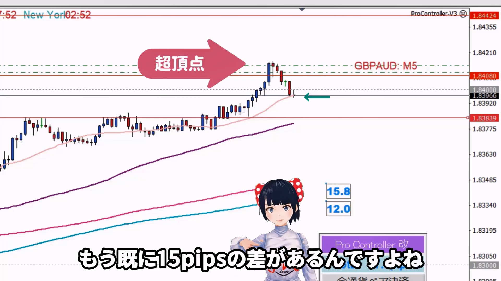

👈👈ギガ速FX_index
👈👈ギガ速FX_index- ページ内のINDEX_test

★★★TEST TEXT★★★★（★TEST）m3004_＋01

리온은 1분 차트와 5분 차트를 사용하여 고점을 노리는 엔트리 방법을 설명합니다.
가격이 고점을 형성할 때 1분 차트에서 음선이 확정된 시점에 엔트리하고, 이후의 움직임을 주의 깊게 관찰합니다.
리온은 중요한 레지스턴스 라인을 기준으로 손절매를 설정하며, 가격이 이 라인을 넘어설 경우 빠르게 손절매를 실행합니다.
5분 차트와 4시간 차트를 병행하여 트레이드의 신뢰성을 높입니다.
리온은 뉴욕 시간대를 중심으로 트레이딩을 하며, 주요 트레이딩 시간에 따라 전략을 조정합니다.
고점에서의 엔트리와 하락세를 예상한 트레이딩을 강조합니다.
리온은 항상 손절매를 설정하고, 시장의 움직임에 따라 빠르게 대응합니다.
초보자에게는 작은 이익이라도 꾸준히 쌓아가는 것을 권장하며, 지나친 욕심을 피하도록 조언합니다.
리온은 실제 트레이드 예시를 통해 고점에서의 엔트리와 엑시트 과정을 설명합니다.
트레이드의 성공과 실패를 통해 배우는 중요성을 강조하며, 명확한 기준을 가지고 트레이드할 것을 권장합니다.
이 영상은 트레이딩 전략을 세우는 데 필요한 실질적인 조언과 리온의 경험을 바탕으로 한 유용한 힌트를 제공합니다.